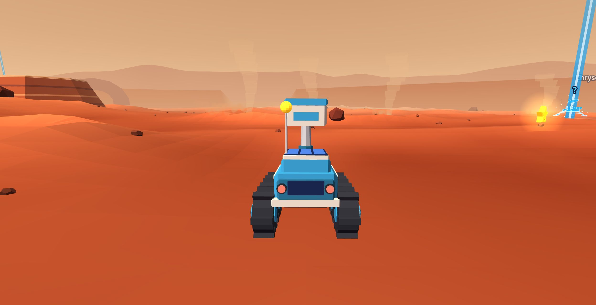

Ghost Rovers
Explore the Moon and Mars, find forgotten space machines, and discover their stories.
Play game View repository
Explore the Moon and Mars, find forgotten space machines, and discover their stories.
Play game View repository
Drive Opportunity across Mars, uncover evidence of ancient water, and send your discoveries home.
Play game View repository